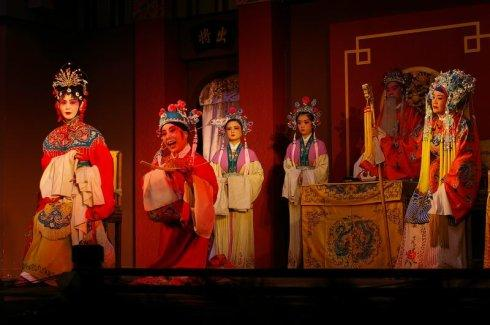
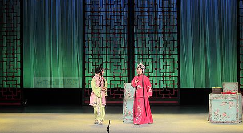

川剧弹戏是用盖板胡琴为主要伴奏乐器演唱的一种戏曲声腔。它源自陕西的秦腔，属梆子系统，因此又有"川梆子"之称。弹戏虽源于秦腔，但它同四川地方语言结合，并受四川锣鼓和民间音乐的影响，经过长期的衍变，无论曲调、唱法还是唱腔结构都与秦腔有所不同，形成了自己独特的艺术风格，具有浓郁的四川地方色彩。尽管二者的关系不是相当接近，但从从曲调结构，调式特点，以及整个唱腔的韵味等方面分析，均可找到它们之间的渊源。弹戏包括情绪完全不同的两类曲调：一类是长于表现喜的感情的叫"甜平"（又称"甜品"、"甜皮"、"甜腔"），一类叫"苦平"（又称"苦品"、"苦皮"），则善于表现悲的感情。它们具有相对的独立性，但它们的调式、板别、结构都是相同的，甚至在同一板别的唱腔中，曲调的骨架都一样。

